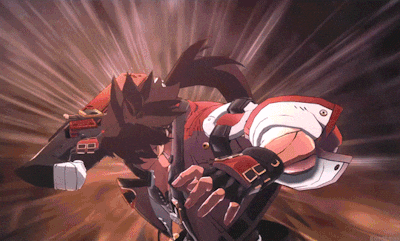

In the 200th century he was just a scientist known as Frederick Bulsara, who, alongside his friend Asuka and lover Aria, all worked on what was known as the Gear Project. Over time Aria became ill, and behind the two of them, Asuka used Sol as a test subject for the Gear project and took a now cryogenically frozen Aria with him. Frederick was knocked out by the incident, and when he woke up he swore revenge and continued to hunt down Asuka now known as That Man. He continued to live on into the 22nd century when he would continue to hunt other evil gears and eventually joined the Holy Knights in order to participate in the crusades against harmful Gear creatures. Eventually, he heard of a corrupted Gear called Justice who caused the great gear war of the 21st century and would defeat her, not finding out till much later she was created from Aria. He eventually finds out Justice had a daughter named Dizzy, but as she was a peaceful humanoid girl, he let her live, unaware she was made from his genes too making her his daughter. Over time, he would continue to fight any threat that would arise and would raise the son of his best friend Ky Kiske, named Sin Kiske (again unaware at this time that Sin is his grandson since Ky married Dizzy). Constantly he chases after rumors of That Man as he is always said to be lurking and continuing his mysterious plan.
Once Ramlethal Valentine declares her war on humanity, Sol immediately hunts her down for her huge bounty. Aided by Sin and Elpohelt Valentine, her sister, they are able to contain Ramlethal and peacefully stop her. Following that, the secret organization seeks to revive Justice. This plan is ultimately ended but results in That Man releasing Jack-O' who is seemingly a recreation of Aria for Sol.
Following the crisis of the Universal Will, Sol is crucial to stopping Happy Chaos and I-No due to his strength and abilities as a gear. Not wanting to have to lose Aria another time, he convinces Jack-O' to not sacrifice herself to stop I-No. Following her defeat alongside Ky, Jack-O', and Nagoriyuki, Sol has a final confrontation with Asuka. It is revealed his ultimate plan was to reunite Aria and Frederick by using Jack-O' and taking away Sol's gear status. Now as a mostly human man again, he lives in peace with Jack-O' once again under the name Frederick.
